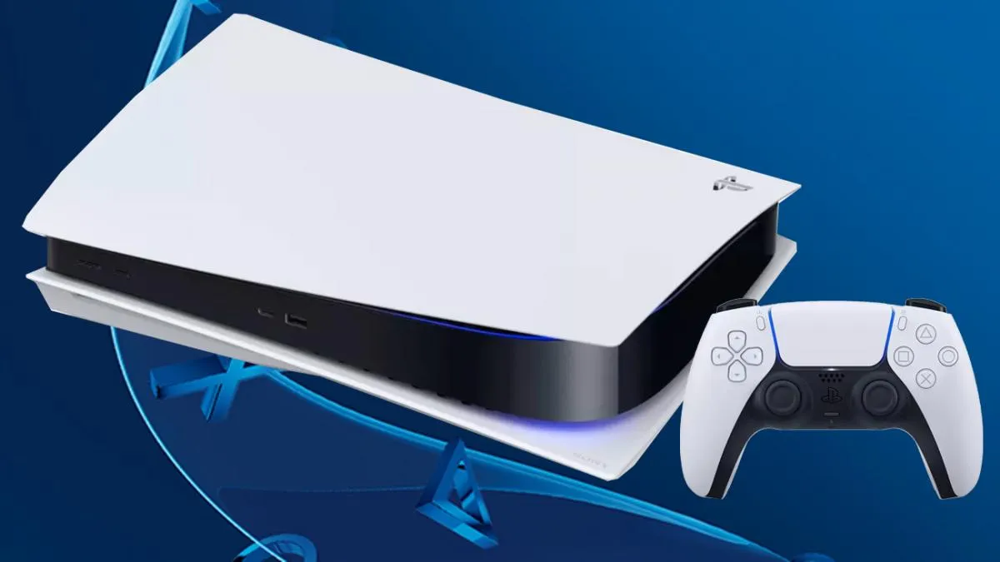
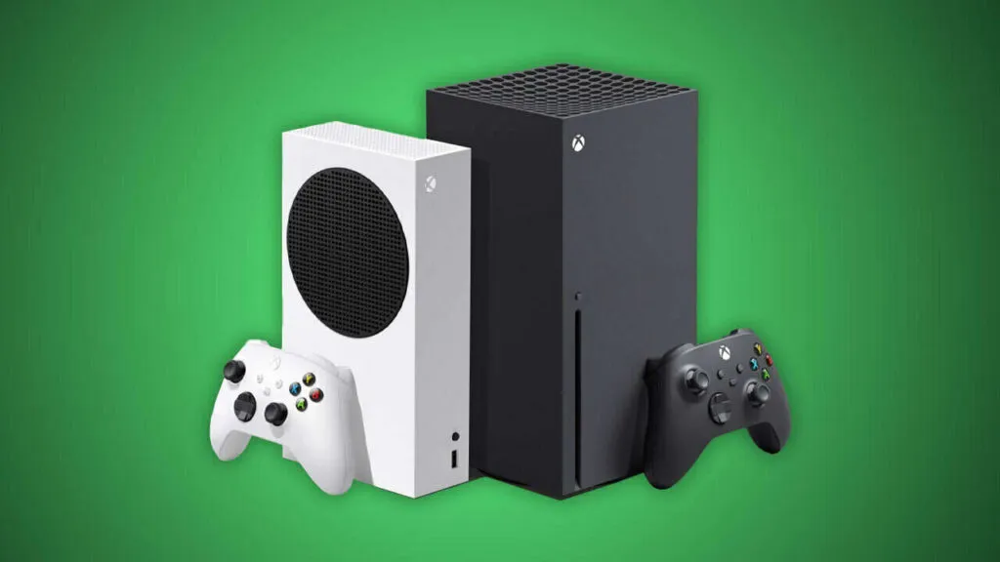
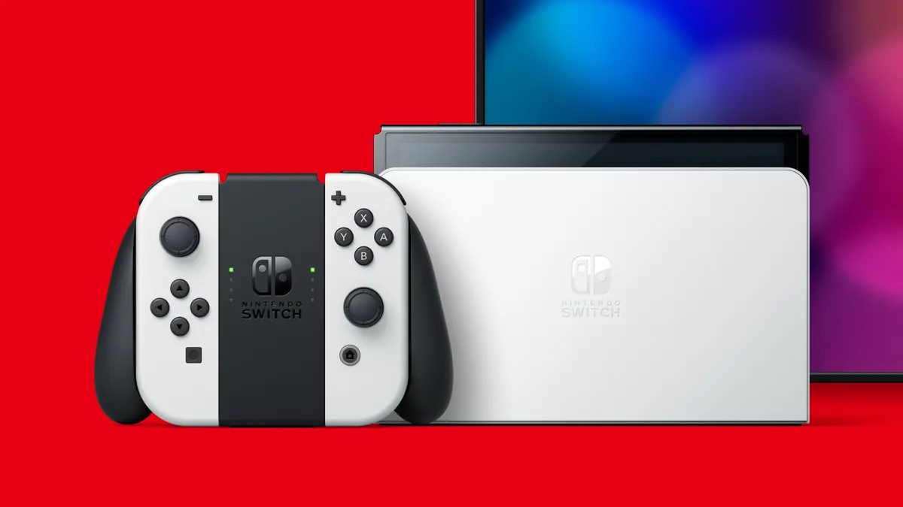
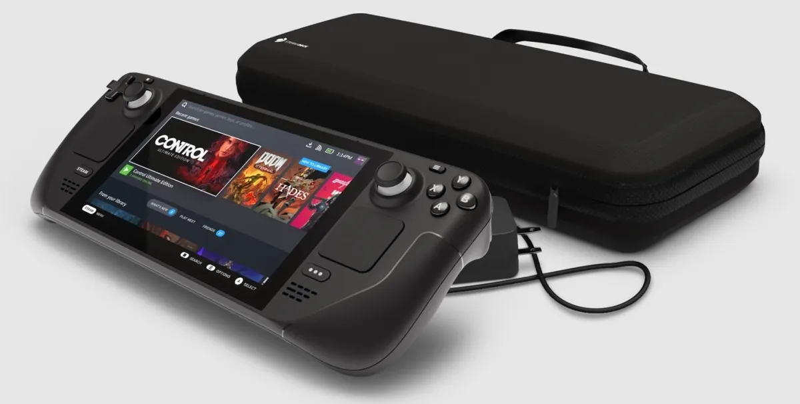

Noticias sobre las nuevas consolas de videjuegos
Durante los últimos meses hemos visto como distintas compañias han lanzado las nuevas iteraciones de las ya conocidas
consolas. Por parte de Sony tenemos la PlayStation 5 en sus versiones digital y con lector de BlueRay, la cual presenta un diseño atípico.
Por su lado, Microsoft lanzó un equipo con un diseño más conservador, algo que nos permitirá tener una consola, además de decoración para
la sala en la que se encuentre.
Nintendo siguiendo el camino que ha trazado durante esta decada y nos presenta algunas mejoras (ya necesitadas) a la Nintendo Switch, ahora
trayendo ahora una pantalla OLED, un incremento en el almacenamiento y el peso. Y para finalizar, Valve con su SteamDeck, que realemnte
es una pc en formato portable. Valve nos mostró algo completamente nuevo en el mundo mainstream, ya que nos da acceso al catalogo de Steam
en cualquier lugar que queramos.



